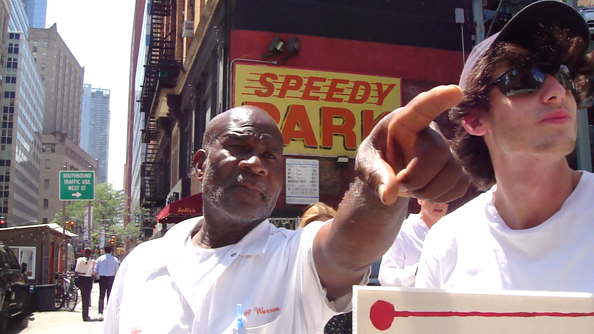
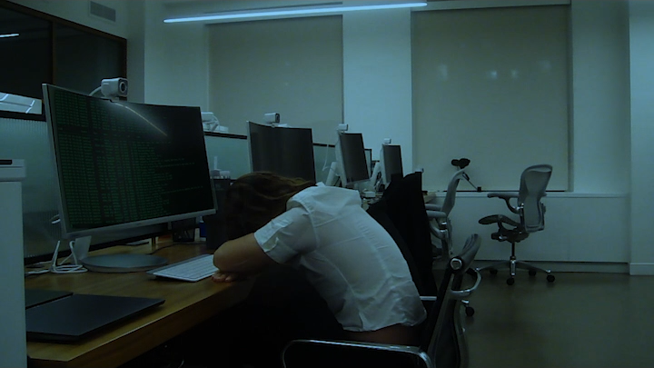
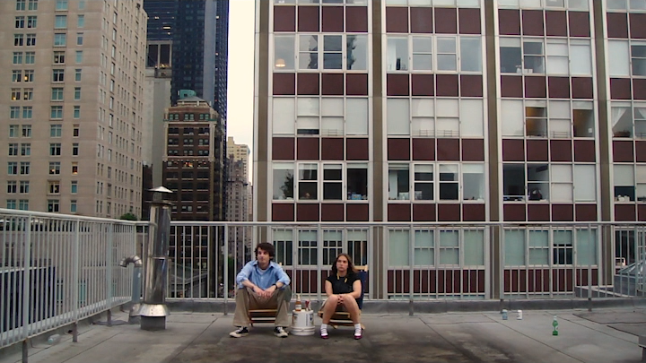
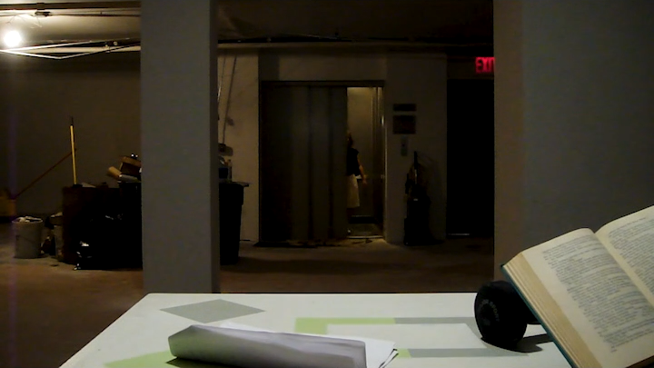

ELI HARRELL
I Want Windows
a computer ~ 2D project
At Eddie's suggestion, Charlie, human billboard, crosses paths with Nat, office drone.
→ full film
click images to jump to the scene

    Written, Directed, & Produced by Eli Harrell August 2024 CAST Charlie - Ethan Rothschild Nat - Ella Harris The Super - Oscar Dorr Eddie - Egbert Romain The Boss - Maya Bormann LOCATION Egbert Romain Kenneth Harrell Allen Lin PROPS Kaufman's Army Navy Eli Harrell Ethan Rothschild Harper Harrell The Intercept Shot on Sony DSC-T90. |